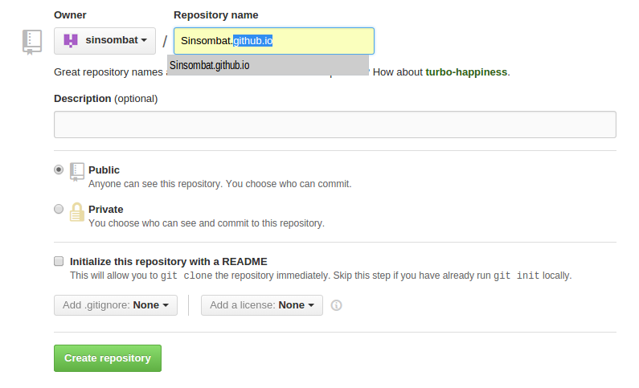
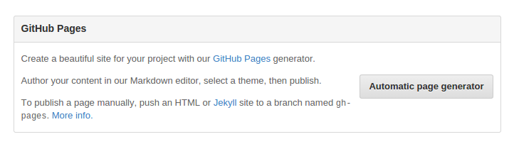
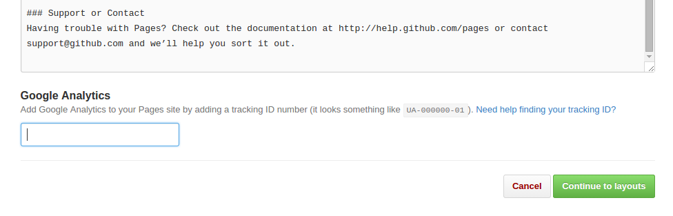

HithubPage + Jekyll
githubpage ก็ทำ blog ได้ แค่มี account ของ github
การทำ githubpage หน้าตาที่ออกมาไม่ค่อยต่างจาก blog อื่นหรืออาจจะ หน้าตาแย่กว่าถ้าไม่ชำนาญเรื่องการปรับแต่ง website
ข้อดี: เหมาะกับพวกอย่างเรา นึกอยากให้โพสไปโผล่วันไหนก็ได้
ข้อเสีย: ไม่มี (เท่ปะล่ะ)
1.ขั้นตอนแรกให้เข้าไปสมัคร github account กันก่อน เข้าไปที่ Github.com
2.พอสมัครเสร็จก็ไปที่ +New repository ปุ่มเขียวๆ จะขึ้นหน้านี้ ให้ตั้งชื่อ repository หรือคือชื่อ address เรานั่นแหละ เช่นของผมเป็น Sinsombat.github.io

ทางที่ดีเข้าไปตาม address ที่เราจะตั้งชื่อก่อนว่ามีคนใช้ไปหรือยังไม่งั้น มันจะ gen blog ไม่ติดแล้วจะงงเหมือนผมตอนแรก เพราะทาง github ไม่ได้เช็คให้ตรงนี้ แค่เช็คใน repo ของเราว่าซื่อซ้ำกับที่มีอยู่แล้วหรือไม่
ถ้าตรวสอบดีแล้วก็กดปุ่ม create เขียวๆได้เลย
3.ไปที่ setting แถบขวามือ เป็นรูป ไขควงไฝว้กับประแจ เลื่อนลงมา กดตุ่ม Automatic page generator

4.จะเป็นหน้านี้เลื่อนลงมา ใครมี google analytics ก็ใส่ไป อันอื่นยังไม่ต้องสนใจ กด continue ไป

5.เลือกรูปแบบของ blog เบื้องต้นไปก่อนใครอยากแก้ค่อยแก้ทีหลัง พอใจแล้วกเ publish page โลดดด
6.ทีนี้รอ 10 นาทีเดี๋ยวรู้… เวลาเราจะเข้าไปเช็คก็เข้าไปตาม address ที่ตั้งไว้นั่นแหละ ถ้าไม่ได้ก็โทรไปถาม githubเลยเบอร์อะไรนะจำไม่ได้
วันนี้พอแค่นี้ก่อนเดี๋ยวมาคุยต่อเรื่อง clone มาแก้ post ต่างๆ และการจำลอง server ที่มี jekyll ในเครื่องเรา จะได้ไม่ต้องpushๆๆรัวๆกัน
บั๊ย..